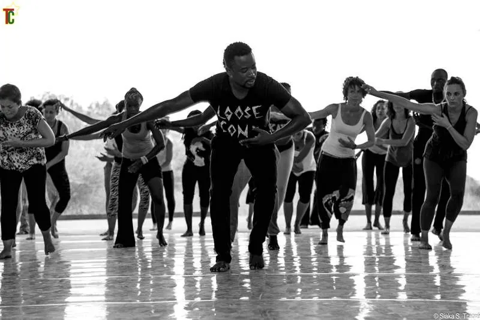
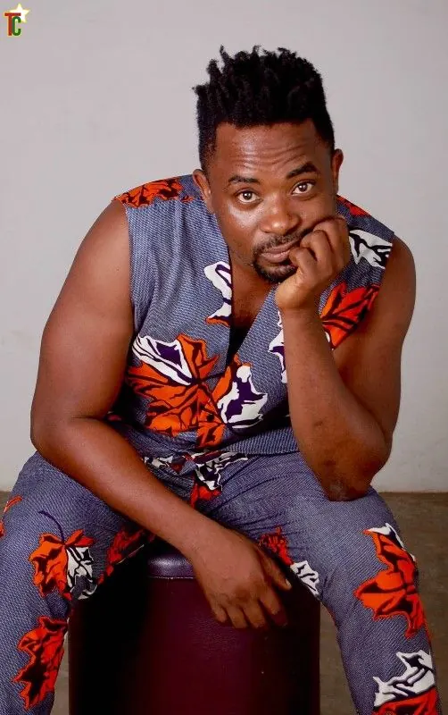
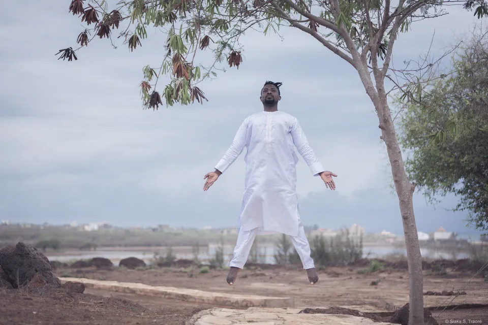
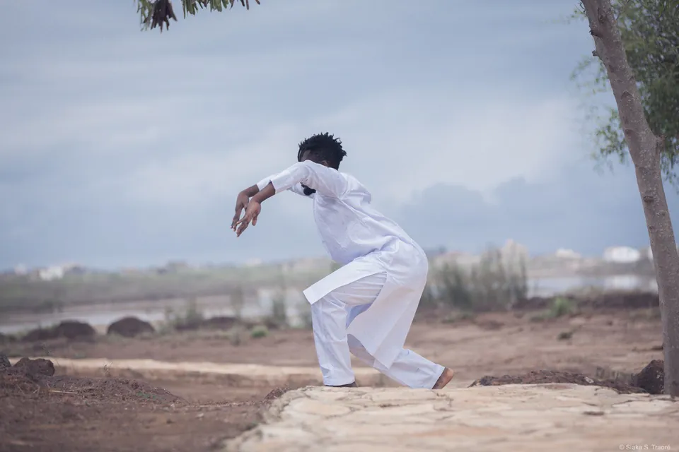
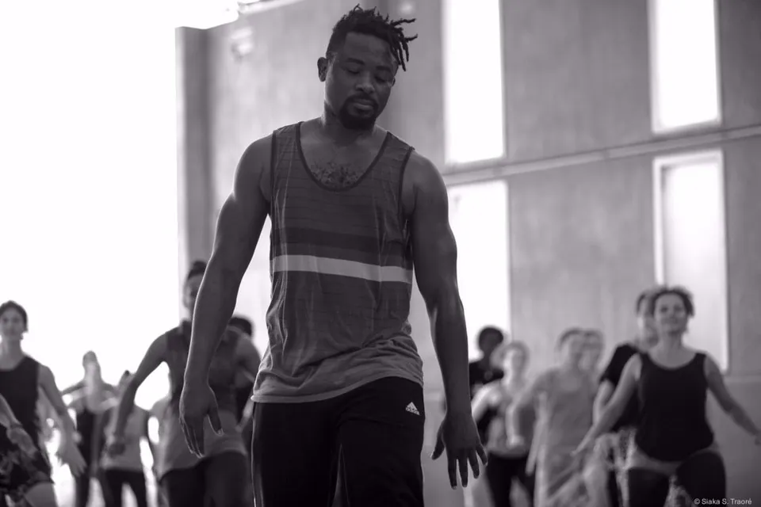
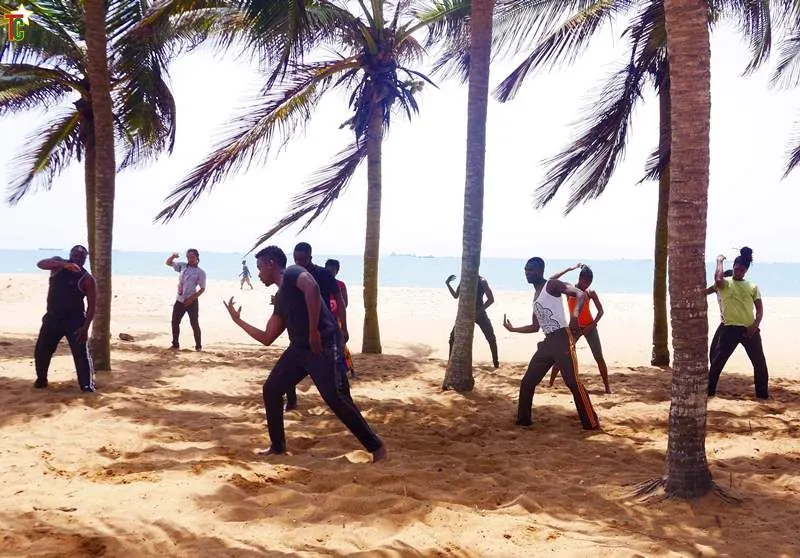

Raouf Tchakondo
Presse
Biographies, photos, kit presse. Tout en un clic.

Kit presse
- Biographies courte et longue
- Photos HD (fond noir, fond blanc)
- Logos
- Fiches des créations
Le kit complet (PDF + ZIP) sera généré depuis le CMS. En attendant, demandez-le par e-mail.

Bio courte
Raouf Tchakondo est danseur, chorégraphe et professeur franco-togolais, né à Lomé. Il découvre la danse en 1998 avec la Sojaf, danse pour Henry Motra puis pour Harold George, et fonde Aské Danse en 2005. Héritier de la technique Germaine Acogny, il enseigne à l’École des Sables depuis 2011, au Togo comme à l’étranger. Son travail relie les danses traditionnelles d’Afrique de l’Ouest, la géométrie du corps et la joie de danser.
Bio longue
Raouf Tchakondo naît à Lomé et grandit dans le quartier Saint-Joseph, entre vodou, christianisme et islam. À 18 ans, en 1998, il découvre la danse moderne avec la compagnie Sojaf et se forme à l’École de danse traditionnelle, moderne et classique de Lomé.
En 2001, il rejoint la compagnie Henry Motra et se tourne vers la danse contemporaine. À partir de 2003, il travaille avec le chorégraphe sierra-léonais Harold George. Ses pièces le conduisent en Belgique et en tournée dans plusieurs pays d’Europe.
En 2005, il fonde à Lomé la compagnie Aské Danse. « Aské » signifie « lumière » en kotokoli. De 2005 à 2007, il enseigne au Collège régional d’artistes de Dapaong, dans le Nord du pays.
Il se forme ensuite à l’École des Sables, au Sénégal, et au Centre national de la danse, à Pantin (2009). Depuis 2011, il assiste Germaine Acogny dans la transmission de sa technique, dont il est l’un des héritiers.
Fort de plus de quinze ans d’expérience professionnelle, il donne des cours réguliers aux amateurs, aux jeunes danseurs et aux professionnels, au Togo comme à l’étranger, notamment à l’École des Sables. Il propose un travail physique intense qui fait des passerelles entre les danses traditionnelles d’Afrique de l’Ouest et la technique Acogny.
Son écriture part des figures géométriques : « L’élément de base, c’est l’orientation que tu donnes au corps dans l’espace en se calquant sur les figures géométriques : cercles, triangles, losanges, carrés. » Il la nourrit des danses vodou du Sud et des danses traditionnelles du Nord Togo.
Ses pièces parlent du monde : l’esclavage moderne, l’amour, l’eldorado et l’immigration, l’égalité malgré le handicap, la nécessité de s’unir. Kébia et Kola (2008), Nalè et Essime (2009), Dansons tous ! (2010, 18 danseurs valides et à mobilité réduite), L’Œil (2013, joué au Bénin et en Côte d’Ivoire). En 2010, il signe le spectacle du Cinquantenaire de l’Indépendance du Togo, avec 200 participants. Pour le théâtre, il collabore à la chorégraphie d’Isis-Antigone, de Kossi Efoui.
Ils en parlent
- TogoculturesRaouf Tchakondo, l’homme qui adore les danses géométriques — Gaëtan Noussouglo2016
- AfriculturesFiche Raouf Tchakondo
- ScenewebIsis-Antigone ou la tragédie des corps dispersés, de Kossi Efoui2023
- L-FRIIZoom sur 4 danseurs de la Maison des Artistes Danseurs2022
- YouTubeTechnique Acogny by Raouf Tchakondo2015
Photos










Crédits photo
Photos HD sur demande, avec l’accord des photographes.
- Raouf Tchakondo en lévitation, bras ouverts, tout en blanc sous un arbre, au bord d’une lagune — © Siaka S. Traoré
- Raouf Tchakondo en équilibre sur une jambe, l’autre tendue devant lui, en tenue blanche — © Siaka S. Traoré
- Raouf Tchakondo face à l’objectif, jambes fléchies, bras déployés comme des ailes — © Siaka S. Traoré
- Raouf Tchakondo penché en avant, bras tendus vers l’arrière, dans un mouvement d’élan — © Siaka S. Traoré
- Raouf Tchakondo, poing levé vers le ciel, jambe arrière levée, regard vers l’objectif — © Siaka S. Traoré
- Raouf Tchakondo, pantalon rouge, mène un cours sur le sable, poings levés, suivi par ses élèves — © DR
- Raouf Tchakondo en plein mouvement au premier plan, un grand groupe de danseurs derrière lui, à l’École des Sables — © Siaka S. Traoré
- Des danseuses et danseurs, bras ouverts, rient en traversant le studio pendant un cours — © Siaka S. Traoré
- Raouf Tchakondo, concentré, avance devant le groupe pendant un atelier — © Siaka S. Traoré
- Cours au sol sur le sable, sous une grande tente jaune : une danseuse tourne le buste, main sur l’épaule — © DR
- Raouf Tchakondo en studio, en tenue en pagne — © Togocultures
- Raouf Tchakondo et ses élèves dansent sur la plage de Lomé, sous les cocotiers — © Togocultures
- Raouf Tchakondo guide un cours, bras ouverts, face à un groupe de danseuses et danseurs — © Siaka S. Traoré
- Stage « Du geste à la danse », 2015 : de jeunes danseurs en mouvement sous un grand préau — © Raouf Tchakondo / YouTube
- Isis-Antigone sur scène : une comédienne au centre, danseuse et musiciens autour d’elle — © Christophe Péan
- Une danseuse de la Maison des Artistes Danseurs, bras levés, foulard en kente — © L-FRII